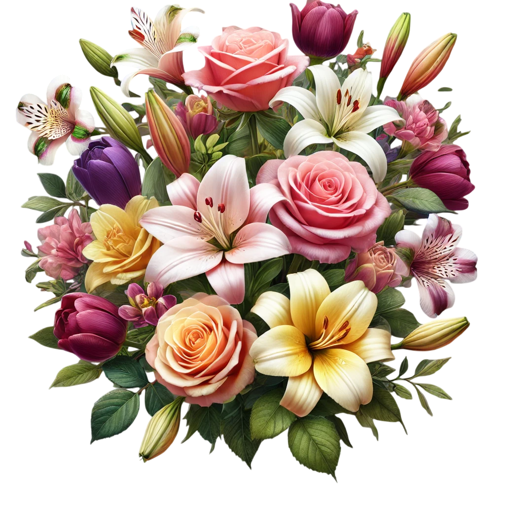

Юля Ушакова,
с 8 марта!
Хотя мы с тобой учились вместе до 4 класса, я хочу поздравить тебя с этим замечательным праздником и пожелать всего самого светлого и лучшего. С тех пор прошло немало времени, и я с удивлением замечаю, как ты изменилась, повзрослела, стала более уверенной в себе и целеустремлённой. Это действительно вдохновляет.
Желаю тебе успехов в учёбе! Пусть все твои усилия и старания приносят самые лучшие результаты, а каждый новый шаг будет приближать тебя к твоим целям и мечтам. Пусть учёба будет увлекательной, а любые трудности, с которыми ты столкнёшься, будут легко преодолимы благодаря твоей решимости и настойчивости. Ты обязательно достигнешь всего, к чему стремишься.
Желаю тебе счастья и гармонии в жизни, чтобы рядом всегда были люди, которые поддерживают тебя, верят в тебя и готовы помочь. Пусть впереди будет масса удивительных событий, путешествий и возможностей, которые откроют новые горизонты и принесут радость. Ты заслуживаешь только самого лучшего, и я уверен, что жизнь тебе это предоставит.
С праздником, Юля! Пусть этот день станет для тебя ещё одним напоминанием о том, как ты уникальна и как много ты можешь! Пусть впереди будет только счастье, удача и вдохновение для воплощения всех твоих мечт и планов!